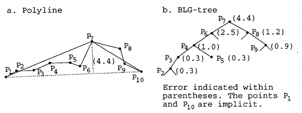
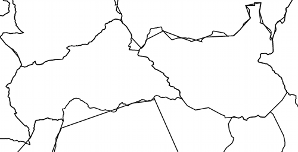
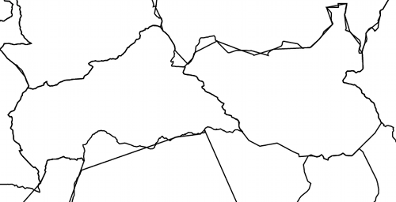

The goal of this project is to enable the implementation of highly interactive choropleth maps on the Web that support smooth zooming and panning with variable resolution. Choropleth Maps, also known as "Thematic Maps", assign color to geographic regions based on some data. Numerous visualization libraries and toolkits support creation of choropleth maps. For example, here is a choropleth map created using D3:
The target data to be visualized includes public data sets that have
The desired choropleth map therefore must have the following properties:
Here is a sketch of what the user interface might look like for time navigation:

Examples of public data available include:
When developing choropleth maps to run in a Web Browser, one must consider bandwidth limitations. To keep download sizes small, existing solutions typically either use a fixed polygon generalization, or image tiles rendered on the server side. Fixed generalization leads to rough looking polygon boundaries when zooming in. Use of server-side image tiles demands a round trip to the server for re-rendering. Our desired choropleth map tool cannot use fixed generalization, as we require high quality polygon boundaries at any zoom level. The image tile approach cannot be used user interactions that cause re-rendering must be instant, and not require a round trip to the server.
The contribution of this project is a set of algorithms and data structures for building client-side rendered choropleth maps with multi-scale polygon generalization. This approach fulfills all the requirements for our choropleth map application, and can be re-used by researchers and software developers looking for a solution for creating a highly performant interactive Web-based choropleth map with smooth zooming and panning and support for hierarchical polygons.
In this section prior work is surveyed in the areas of multi-scale structures, line and polygon generalization algorithms, and web-based choropleth map visualization tools.
Multi-scale data structures and algorithms have been devised to cope with data at multiple scales (i.e. varying "zoom level" or "level of detail"). These approaches often involve recursive partitioning of a space into a data structure that can be efficiently queried. Multi-scale structures related to this work include the Quadtree, R-Tree, Reactive Tree, and BLG Tree.
The quadtree data structure recursively subdivides a bounding box into four quadrants, or "buckets". For a point quadtree, each bucket is subdivided as long as it contains above a certain threshold number of vertices.

An example point quadtree, from Wikipedia.
The R-Tree data structure is a rectangle-based tree structure designed to support efficient rectangle intersection or containment testing.

An example R-Tree, from Wikipedia.
The Reactive Tree data structure aims to provide a multi-scale solution for dynamic generalization using simplification (removal of vertices in lines and polygons), aggregation (summarizing many features with fewer), symbolization (representing polygons with lines or points), and selection (omission of features).
The Binary Line Generalization Tree (BLG-Tree) is one component of the Reactive Tree that supports efficient rendering of pre-computed line generalizations at multiple scales. The BLG-Tree is a binary tree in which an inorder traversal yields the original ordering of the vertices, and the depth of each node corresponds to its "importance level", a value determining at which scale the vertex should be present. To render a polygon or line at a given resolution, thr tree is traversed only to the depth required to reach the importance threshold determined by the scale of the viewing region.

An example BLG-Tree shown with its corresponding line, simplified using the Douglas-Peucker algorithm. From the Reactive Tree Paper.
Line generalization refers to the process of modifying high resolution lines or polygons for presentation at a lower resolution. Some line generalization algorithms function by choosing original vertices to "keep", and others introduce vertices that were not there in the original data. The two most relevant line generalization algorithms for this work are the Douglas-Peucker Algorithm and the Li-Openshaw Algorithm.
The Douglas-Peucker algorithm appears to be the most widely used algorithm for line generalization. It works by recursively subdividing the list of vertices in the line until the "error" (perpendicular distance) is below a certain threshold value.
The Li-Openshaw Algorithm works by imposing a raster grid over the line and selecting vertices such that each cell of the raster grid that contains vertices is represented by a single vertex. There are several variations of this algorithm; one that introduces points not in the original data (such as the cell center, or average between enter and exit points), and one that uses the original vertices.
Many Web-based choropleth map tools exist today. Most, if not all, of them use either fixed line generalization (most likely using the Douglas-Peucker algorithm) or use an image tile approach in which images are rendered on the server side, cached, and delivered to clients when needed.
Here is a selection of several tools:
Our solution, which we call "Quadstream", involves the combination of the Quadtree recursive subdivision pattern with the Li-Openshaw line generalization algorithm. The result can be partitioned into small files. The client can consume these files as they are neede to fill in detail on demand, as the user zooms and pans.
The Quadstream algorithm works in two phases; the publishing phase and the consumption phase.
The publishing phase is the process by which original input files (e.g. ESRI Shapefiles or GeoJSON files) are transformed into a set of files that can be published to the Web and consumed by Quadstream clients. This is a one-time process for each shape set to be published.
The algorithms for the publishing phase do the following:
fileDepth. The effect of this transformation is that all the vertices present in the subtreefileDepth levels down from the root all end up in the root node, and subnodes contain the leaf nodes of their original subtree down fileDepth levels. Each node in the transformed tree is output as a file containing an array of vertex objects, named according to its (level, i, j) address in the tree. The value of fileDepth can be tweaked to optimize the size of the files for best performance.The algorithm that computes the quadtree is the main novel contribution of this work, and can be summarized with the following pseudocode.
N = makeHashMap()
for each vertex v in V
for each level l in [0 ... L]
k = key(v, l)
if N does not contain k as a key
put(N, k, v)
break out of inner loop
In this pseudocode,
makeHashMap() creates a hash table, andkey(vertex, level) computes the address of the quadtree node at the given level that the given vertex falls into. This address is of the form (level, i, j) where i and j define the integral grid coordinates of the quadtree partitioning.The running time of this algorithm is worst case O(n * L), because each vertex is visited once, and at most all levels between 0 and L are tested for each vertex. As L is a constant, the analysis simplifies to O(n).
The consumption phase is the phase of the Quadstream system that executes when a Browser-residend Quadstream client reads the files created in the publishing phase from the server and presents an interactive map with zooming and panning to the end user.
In the client, an R-Tree is initialized that will contain the bounding rectangles of the polygons. Each polygon is represented in the client using a BLG-Tree. Initially, the root file is downloaded, which contains a coarse generalization of all polygons (and their bounding boxes, so the R-Tree can be initialized). As the user zooms and pans, the files containing the vertices that should be rendered for the changing view rectangle are downloaded and inserted into their corresponding BLG trees.
Our goal is to achieve a rendering cycle that can execute at 60 Frames per second to support smoothly animated zooming and panning. Each rendering cycle, the following steps occur:
The above sections articulate the ideal implementation, however the actual implementation fails to address the following:
The algorithm itself has two severe issues; it creates non-simple polygons in some cases, and it fails to handle the case when two polygons share a border but the vertices to not match up exactly.
 

Examples of where the algorithm delivers poor results: non-simple polygons, and borders that do not match exactly.
In terms of the implementation, future work includes using multiple files, using an R-Tree, and computing the intersection with the viewing rectnagle. Additional desired features include the ability to work over a hierarchy of polygons (e.g. Countries, States, Counties) and use of a 3D sphere projection.
This project is part of a larger project, the Universal Data Cube Visualization System, which aims to provide a public resource pool with, Data Sets, Visualization Authoring Tools, and Visualizations. This system uses Semantic Web standards such as the RDF Data Cube Vocabulary to represent data.
Future work includes integrating the Quadstream system with the UDC data representation system such that public data exposed using the UDC framework will be automatically made browsable using Quadstream-based choropleth maps. This involves the assignment of RDF URIs to Quadstream polygons as identifiers, and matching of identifers occuring in the UDC data with identifiers used for polygons.
Ideally a distributed Web-based ecosystem of developers and users can evolve in which users and developers publish their simplified polygons to the Web, and others can access them. Eventually, a system can evolve that contains all boundaries of Continents, Countries, States, Counties (and international equivalent), Cities, and Towns.
This hierarchy can serve as a backbone for assembling a collection of all useful public data, including statistics for health, economics, education, pollution, industry, and many more. The resulting tool would function as a telescope into the world through the lens of data and interactive graphics, and could be used by anyone with an Internet connection. It is our hope that this tool stands to revolutionize education, journalism, and public policy processes.
Links:
{kind=link}
{kind=link}
{kind=link}